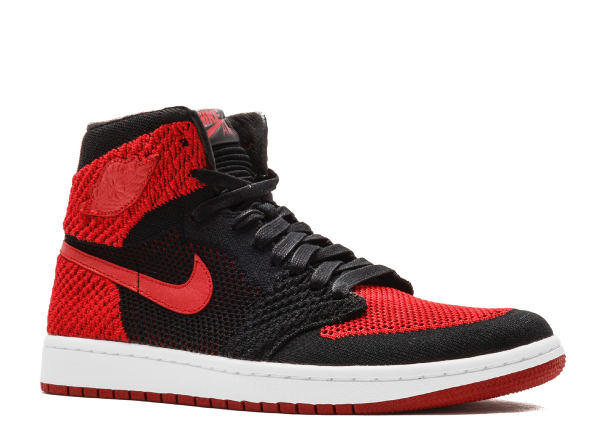
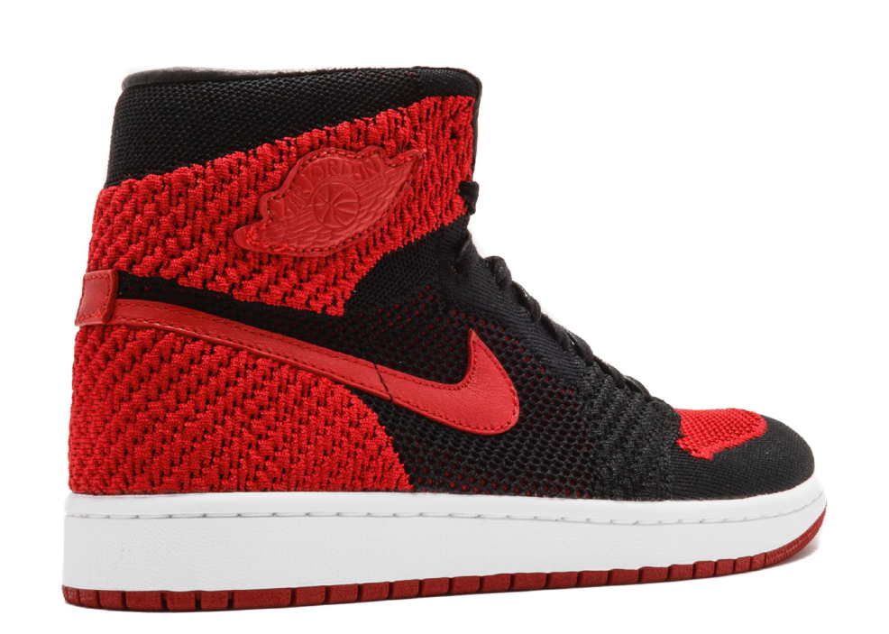
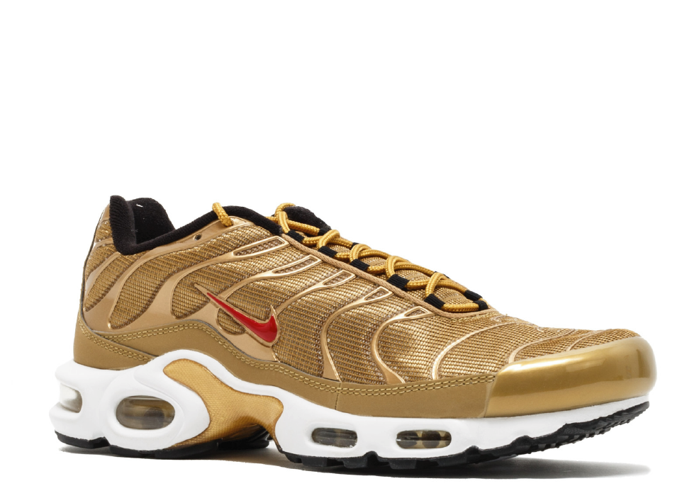

  <!-- phai -->
  <div class="col-md-9 col-xs-12 phai">
      <div class="row phai1">
          
          <div class="col-md-12 phai3">
                  <h3>NIKE JORDAN 1</h3>
              <div class="col-md-6 col-xs-12 col-ms-12 danganh">
                  <div class="daugach2"></div>
                  <div class="col-md-12 col-xs-12 col-ms-12 danganh1">
                      <section class="awSlider">
                          <div class="carousel slide" data-ride="carousel">
                              <!-- Indicators -->
                              <ol class="carousel-indicators">
                                  <li data-target=".carousel" data-slide-to="0" class="active"></li>
                                  <li data-target=".carousel" data-slide-to="1"></li>
                                  <li data-target=".carousel" data-slide-to="2"></li>
                                  <li data-target=".carousel" data-slide-to="3"></li>
                              </ol>

                              <!-- Wrapper for slides -->
                              <div class="carousel-inner" role="listbox">
                                  <div class="item active">
                                      

                                  </div>
                                  <div class="item">
                                      

                                  </div>
                                  <div class="item">
                                      

                                  </div>
                                  <div class="item">
                                      
                                  </div>

                              </div>

                              <!-- Controls -->

                          </div>
                      </section>
                  </div>
              </div>
              <div class="col-md-6 dangtt">
                  <h4>Thông tin sản phẩm</h4>
                  <ul>
                      <span class="glyphicon glyphicon-tag"></span>
                      AIR JORDAN 4 RETRO "2012 RELEASE"
                  </ul>
                  <div class="daugach3"></div>
                  <h4>Thông tin sơ lượt</h4>
                  <ul>
                      <span class="glyphicon glyphicon-tags"></span>
                      The Air Jordan 1 Retro High Flyknit Men's Shoe updates the iconic original with lightweight, flexible Flyknit.
                  </ul>
                  <ul>
                      <span class="glyphicon glyphicon-tags"></span>
                      Shown: Black/White/Game Royal
                  </ul>
                  <ul>
                      <span class="glyphicon glyphicon-tags"></span>
                      Style: 919704-006
                  </ul>
                  <ul>
                      <input type="number" class="form__field" placeholder="" />
                  </ul>
                  <ul>
                      <button type="button" class="btn btn--primary btn--inside uppercase">Đấu giá</button>
                  </ul>
                  <div class="daugach3"></div>
                  <h4>Thời gian</h4>
              </div>
              <div class="col-md-12 phai2">
                  <h4>Thông tin chi tiết</h4>
              </div>
              <div class="col-md-12 phai4">
                  <h4>RETRO FEEL. MODERN APPEAL.</h4>


                  <p> The Air Jordan 1 Retro High Flyknit Men's Shoe updates the iconic original with lightweight,
                      flexible Flyknit.</p>


                  <p> Benefits</p>

                  <p>Lightweight Flyknit material is breathable and flexible Pigskin leather accents for a premium
                      look Rubber cupsole construction provides sturdy support and traction Nike Air unit offers
                      lightweight cushioning Shown: Black/White/Game Royal Style: 919704-006 Flyknit Origins
                  </p>

                  <p>
                      Nike Flyknit technology was inspired by feedback from runners seeking a shoe with the snug (and virtually unnoticed) fit
                      of a sock.
                  </p>
              </div>
          </div>

      </div>

  </div>
  <!-- het phai -->
